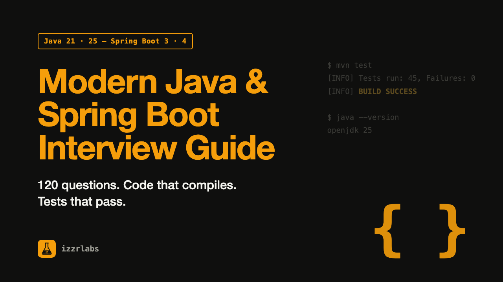

A IZZR Labs cria produtos digitais para desenvolvedores Java e Spring Boot. Os dois produtos seguem a mesma regra: se uma afirmação pode ser testada, existe código por trás dela que roda, não só uma frase.
Os dois produtos abaixo são em inglês (texto, código e comentários) e o pagamento é em dólar (US$), processado no Gumroad.

Guia · compra única
Modern Java & Spring Boot Interview Guide
Cerca de 120 perguntas de entrevista em 10 capítulos — cada uma com resposta de 30 segundos, aprofundamento, e 2–4 perguntas de follow-up já respondidas.
Um repositório Maven multi-módulo (um módulo por capítulo) com testes JUnit 5 que passam no mvn test — as afirmações marcadas como testadas no texto têm um teste por trás delas.
Baseline Java 21 LTS e Spring Boot 4.0 (Spring Framework 7), com notas sobre o que mudou até o Java 25 LTS e notas de "vindo do Boot 3.x" nos capítulos de Spring.
Do capítulo 1 grátis, pergunta 1.4 (em inglês, como no guia)
What happens if you mutate an object after using it as a HashMap key?
The entry becomes unreachable. The map stored it in the bin chosen by the old hash. After the mutation, get(key) computes the new hash and looks in a different bin, and looking up with an equal copy of the old value finds the bin but fails equals. The entry is still in the map: it counts in size(), shows up in iteration and in containsValue, but you can no longer get or remove it by key. In a long-lived map this is a memory leak.
O que isso não é: arquivos Markdown, não um PDF empacotado; sem vídeo, sem assinatura. Roda sem Docker — só JDK 21 e Maven (as provas de JPA e de testes usam um banco H2 em memória).
Reembolso se o conteúdo não bater com esta descrição — um capítulo faltando, ou código que não roda como descrito. Peça pelo Gumroad; não é uma garantia de "mudei de ideia".
Conteúdo (texto, código e comentários) em inglês. Pagamento em dólar (US$), no Gumroad.
Kit · compra única
Claude Code Kit for Java & Spring Boot
Uma pasta .claude/: 3 subagentes (java-reviewer, test-writer, migration), 3 skills (jpa-flyway, testcontainers-testing, boot-3-to-4-upgrade), 6 slash commands e 3 hooks já ligados no settings.json.
5 templates de CLAUDE.md mais um guia de adaptação: monolito, microsserviço, Spring Modulith, monorepo Maven multi-módulo, e legado Java 8/11 → 21.
Um projeto Spring Boot de exemplo completo e multi-módulo (Java 21, Spring Boot 4.1.2, Flyway, 18 testes passando) e um guia em Markdown de 7 partes — o kit foi testado contra esse projeto antes de ser lançado.
claude ~ example — O hook de Stop deste kit, no projeto de exemplo grátis
# O Claude edita o GreetingController ("Hello, " -> "Hi, ") e tenta encerrar o turno
$ .claude/hooks/require-green-build.sh
require-green-build.sh: `mvn -q test` failed (attempt 1 of 3, stop_hook_active=false). Last 20 lines:
[ERROR] GreetingControllerTest.defaultsToWorld:22 JSON path "$.message" expected:<Hello, world> but was:<Hi, world>[ERROR] Tests run: 2, Failures: 2, Errors: 0, Skipped: 0
$ echo $?
2 # turno bloqueado: o Claude tem que consertar
# O Claude volta pra "Hello, " e tenta de novo
$ mvn test
[INFO] Tests run: 2, Failures: 0, Errors: 0, Skipped: 0
[INFO] BUILD SUCCESS
O que isso não é: não inclui o Claude Code em si (você precisa da sua própria assinatura e CLI). Markdown, não um PDF e não um curso em vídeo, sem atualização futura empacotada e sem suporte 1:1.
Os 3 hooks do Claude Code que vêm no kit — bloqueiam um segredo óbvio antes de ser escrito, formatam o arquivo depois de uma edição, e impedem o turno de terminar com o build vermelho — grátis no GitHub, sob a licença MIT.